Tier VI Tanks
The Best Performing Tanks
Highest Relative WR
The graph shows the tanks with the highest Relative WR. That is the average of players' WR in a tank compared to their average WR at the tier (in all same tier tanks). Relative WR is a measure of the performance/strength of the tank.
- All the statistics are about battles fought during the update 7.1 only.
- The impact of “Stock-grind battles” is reduced based on tier-specific requirement for total battles at the end of the update. Only players with more than 0-152 (depending on the tier) battles in a tank in the end of the update are included to eliminate the impact of the first battles in the tank (with sub-100% crew / modules).
- The players need to have 10-20 battles in a tank and 20-40 battles at the tier during the update.
- Average WR is the players’s average WR in the tank
- Player WR at Tier is the average WR of the players of the tank at the tier. Since different tiers have different difficulty, it is more meaningful to compare players' performance in the same tier tanks.
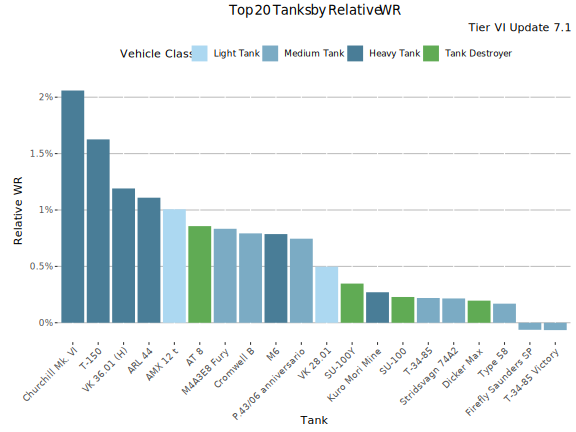
Highest Relative WR - Table
| Tank | Relative WR | Average WR | Player WR at Tier | Players | Battles/Player | Vehicle Class | Tank type |
|---|---|---|---|---|---|---|---|
| Churchill Mk. VI | 2.1% | 54.7% | 52.6% | 521 | 71 | Heavy Tank | Premium |
| T-150 | 1.6% | 54.5% | 52.9% | 479 | 95 | Heavy Tank | Premium |
| VK 36.01 (H) | 1.22% | 52.5% | 51.3% | 6 580 | 92 | Heavy Tank | Researchable |
| ARL 44 | 1.13% | 53.6% | 52.5% | 9 802 | 97 | Heavy Tank | Researchable |
| AMX 12 t | 1.06% | 52.1% | 51% | 3 014 | 73 | Light Tank | Researchable |
| AT 8 | 0.93% | 51.3% | 50.3% | 1 877 | 62 | Tank Destroyer | Researchable |
| M6 | 0.83% | 50.8% | 49.9% | 4 034 | 84 | Heavy Tank | Researchable |
| Cromwell B | 0.8% | 56.6% | 55.8% | 2 433 | 85 | Medium Tank | Premium |
| P.43/06 anniversario | 0.74% | 51.4% | 50.7% | 12 089 | 69 | Medium Tank | Premium |
| VK 28.01 | 0.48% | 52.7% | 52.3% | 6 226 | 122 | Light Tank | Researchable |
| SU-100Y | 0.34% | 52.4% | 52.1% | 11 523 | 112 | Tank Destroyer | Premium |
| Kuro Mori Mine | 0.29% | 52.7% | 52.4% | 1 469 | 109 | Heavy Tank | Premium |
| T-34-85 | 0.24% | 50.9% | 50.6% | 4 412 | 114 | Medium Tank | Researchable |
| Stridsvagn 74A2 | 0.23% | 55% | 54.8% | 1 084 | 84 | Medium Tank | Premium |
| SU-100 | 0.21% | 51% | 50.7% | 6 870 | 93 | Tank Destroyer | Researchable |
| Dicker Max | 0.17% | 52% | 51.8% | 4 527 | 83 | Tank Destroyer | Premium |
| Type 58 | 0.13% | 52.3% | 52.2% | 2 584 | 67 | Medium Tank | Researchable |
| T-34-85 Victory | -0.05% | 54.8% | 54.9% | 608 | 108 | Medium Tank | Premium |
| Cromwell | -0.06% | 51.7% | 51.7% | 3 159 | 78 | Medium Tank | Researchable |
| Thunder | -0.07% | 52.4% | 52.5% | 2 955 | 68 | Heavy Tank | Premium |
Relative WR by player skill-level
This graph shows the best performing tanks by Relative WR by player skill-levels measured as WR at the tank’s tier.
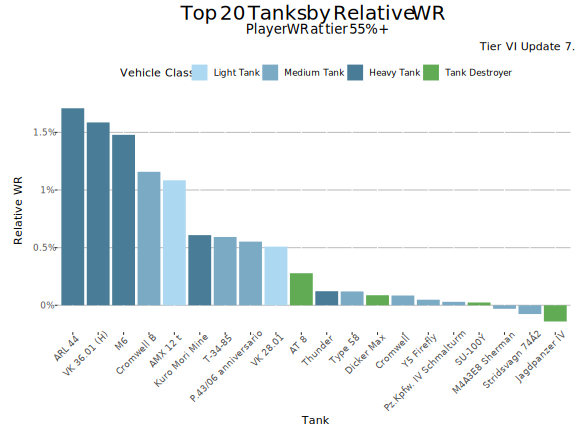
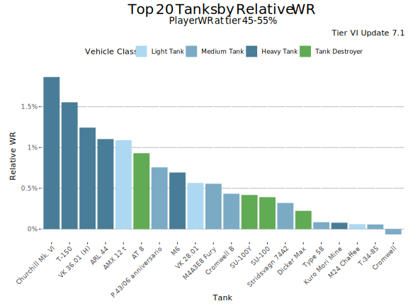
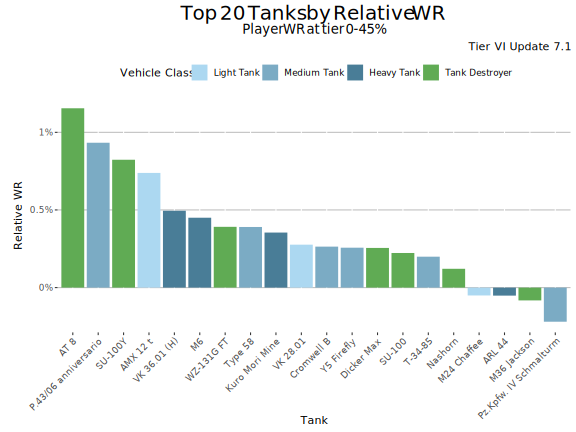
Highest Average WR
This graph shows the tanks with the highest average WR at tier VI during update 7.1. Player WR denotes the tank’s players' average WR across all the tanks during the update. Only tanks with more than 400 players are listed. This may filter out few upcoming tanks that are being tested.

Highest Average WR - Table
Average WR denotes average WR in a tank across all the players during the update. Player WR denotes the tank’s players' average WR across all the tanks during the update.
| Tank | Average WR | Player WR at Tier | Players | Battles/Player | Vehicle Class | Tank type |
|---|---|---|---|---|---|---|
| Cromwell B | 56.9% | 55.7% | 2 657 | 80 | Medium Tank | Premium |
| Stridsvagn 74A2 | 55.1% | 54.8% | 1 167 | 81 | Medium Tank | Premium |
| T-34-85 Victory | 54.9% | 54.9% | 656 | 102 | Medium Tank | Premium |
| Churchill Mk. VI | 54.8% | 52.6% | 546 | 69 | Heavy Tank | Premium |
| T-150 | 54.6% | 52.9% | 502 | 92 | Heavy Tank | Premium |
| ARL 44 | 53.7% | 52.5% | 10 428 | 94 | Heavy Tank | Researchable |
| Pz.Kpfw. IV Schmalturm | 53.5% | 53.6% | 2 142 | 82 | Medium Tank | Premium |
| VK 28.01 | 52.8% | 52.2% | 6 730 | 117 | Light Tank | Researchable |
| Kuro Mori Mine | 52.6% | 52.3% | 1 560 | 105 | Heavy Tank | Premium |
| Thunder | 52.5% | 52.5% | 3 134 | 66 | Heavy Tank | Premium |
| VK 36.01 (H) | 52.4% | 51.2% | 7 203 | 91 | Heavy Tank | Researchable |
| Type 58 | 52.4% | 52.1% | 2 788 | 65 | Medium Tank | Researchable |
| SU-100Y | 52.4% | 52.1% | 12 659 | 105 | Tank Destroyer | Premium |
| AMX 12 t | 52.1% | 51% | 3 190 | 71 | Light Tank | Researchable |
| Dicker Max | 52% | 51.8% | 4 859 | 80 | Tank Destroyer | Premium |
| Cromwell | 51.7% | 51.7% | 3 366 | 78 | Medium Tank | Researchable |
| P.43/06 anniversario | 51.4% | 50.7% | 13 164 | 66 | Medium Tank | Premium |
| AT 8 | 51.3% | 50.3% | 2 051 | 61 | Tank Destroyer | Researchable |
| WZ-131G FT | 51.3% | 51.3% | 1 503 | 67 | Tank Destroyer | Researchable |
| SU-100 | 51% | 50.7% | 7 270 | 90 | Tank Destroyer | Researchable |
Highest Average Damage
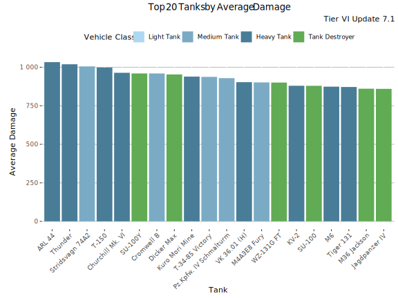
Highest Average Damage - Table
| Tank | Average Damage | Average WR | Player WR at Tier | Players | Battles/Player | Vehicle Class | Tank type |
|---|---|---|---|---|---|---|---|
| ARL 44 | 1 035 | 53.7% | 52.5% | 10 428 | 94 | Heavy Tank | Researchable |
| Thunder | 1 021 | 52.5% | 52.5% | 3 134 | 66 | Heavy Tank | Premium |
| T-150 | 1 003 | 54.6% | 52.9% | 502 | 92 | Heavy Tank | Premium |
| Stridsvagn 74A2 | 1 002 | 55.1% | 54.8% | 1 167 | 81 | Medium Tank | Premium |
| Churchill Mk. VI | 966 | 54.8% | 52.6% | 546 | 69 | Heavy Tank | Premium |
| SU-100Y | 961 | 52.4% | 52.1% | 12 659 | 105 | Tank Destroyer | Premium |
| Cromwell B | 959 | 56.9% | 55.7% | 2 657 | 80 | Medium Tank | Premium |
| Dicker Max | 954 | 52% | 51.8% | 4 859 | 80 | Tank Destroyer | Premium |
| T-34-85 Victory | 941 | 54.9% | 54.9% | 656 | 102 | Medium Tank | Premium |
| Kuro Mori Mine | 940 | 52.6% | 52.3% | 1 560 | 105 | Heavy Tank | Premium |
| Pz.Kpfw. IV Schmalturm | 928 | 53.5% | 53.6% | 2 142 | 82 | Medium Tank | Premium |
| VK 36.01 (H) | 907 | 52.4% | 51.2% | 7 203 | 91 | Heavy Tank | Researchable |
| WZ-131G FT | 901 | 51.3% | 51.3% | 1 503 | 67 | Tank Destroyer | Researchable |
| SU-100 | 884 | 51% | 50.7% | 7 270 | 90 | Tank Destroyer | Researchable |
| KV-2 | 882 | 50.4% | 51.4% | 17 336 | 116 | Heavy Tank | Researchable |
| M6 | 875 | 50.7% | 49.9% | 4 424 | 83 | Heavy Tank | Researchable |
| Tiger 131 | 874 | 49.4% | 50.5% | 5 892 | 50 | Heavy Tank | Premium |
| KV-1S | 862 | 49.7% | 50.1% | 8 494 | 112 | Heavy Tank | Researchable |
| Jagdpanzer IV | 862 | 50.3% | 50.6% | 4 499 | 91 | Tank Destroyer | Researchable |
| M36 Jackson | 862 | 50.5% | 50.7% | 2 174 | 71 | Tank Destroyer | Researchable |
Highest Average Kills/Battle
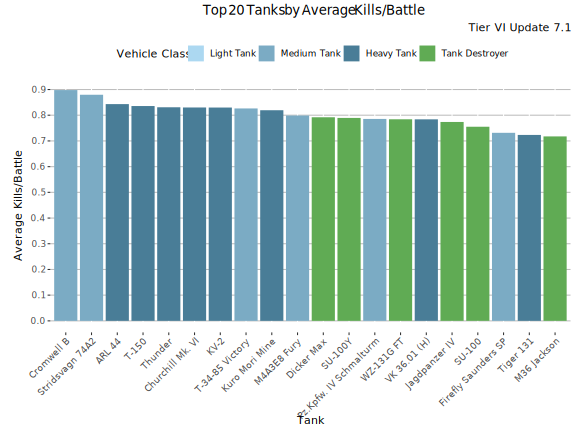
Highest Average Kills/Battle - Table
| Tank | Average Kills/Battle | Average WR | Player WR at Tier | Players | Battles/Player | Vehicle Class | Tank type |
|---|---|---|---|---|---|---|---|
| Cromwell B | 0.90 | 56.9% | 55.7% | 2 657 | 80 | Medium Tank | Premium |
| Stridsvagn 74A2 | 0.88 | 55.1% | 54.8% | 1 167 | 81 | Medium Tank | Premium |
| ARL 44 | 0.85 | 53.7% | 52.5% | 10 428 | 94 | Heavy Tank | Researchable |
| T-150 | 0.84 | 54.6% | 52.9% | 502 | 92 | Heavy Tank | Premium |
| Thunder | 0.83 | 52.5% | 52.5% | 3 134 | 66 | Heavy Tank | Premium |
| KV-2 | 0.83 | 50.4% | 51.4% | 17 336 | 116 | Heavy Tank | Researchable |
| Churchill Mk. VI | 0.83 | 54.8% | 52.6% | 546 | 69 | Heavy Tank | Premium |
| T-34-85 Victory | 0.83 | 54.9% | 54.9% | 656 | 102 | Medium Tank | Premium |
| Kuro Mori Mine | 0.82 | 52.6% | 52.3% | 1 560 | 105 | Heavy Tank | Premium |
| Dicker Max | 0.79 | 52% | 51.8% | 4 859 | 80 | Tank Destroyer | Premium |
| SU-100Y | 0.79 | 52.4% | 52.1% | 12 659 | 105 | Tank Destroyer | Premium |
| VK 36.01 (H) | 0.79 | 52.4% | 51.2% | 7 203 | 91 | Heavy Tank | Researchable |
| WZ-131G FT | 0.79 | 51.3% | 51.3% | 1 503 | 67 | Tank Destroyer | Researchable |
| Pz.Kpfw. IV Schmalturm | 0.79 | 53.5% | 53.6% | 2 142 | 82 | Medium Tank | Premium |
| Jagdpanzer IV | 0.78 | 50.3% | 50.6% | 4 499 | 91 | Tank Destroyer | Researchable |
| SU-100 | 0.76 | 51% | 50.7% | 7 270 | 90 | Tank Destroyer | Researchable |
| Tiger 131 | 0.73 | 49.4% | 50.5% | 5 892 | 50 | Heavy Tank | Premium |
| M36 Jackson | 0.72 | 50.5% | 50.7% | 2 174 | 71 | Tank Destroyer | Researchable |
| Type 58 | 0.72 | 52.4% | 52.1% | 2 788 | 65 | Medium Tank | Researchable |
| M6 | 0.72 | 50.7% | 49.9% | 4 424 | 83 | Heavy Tank | Researchable |
Highest Spot Rate
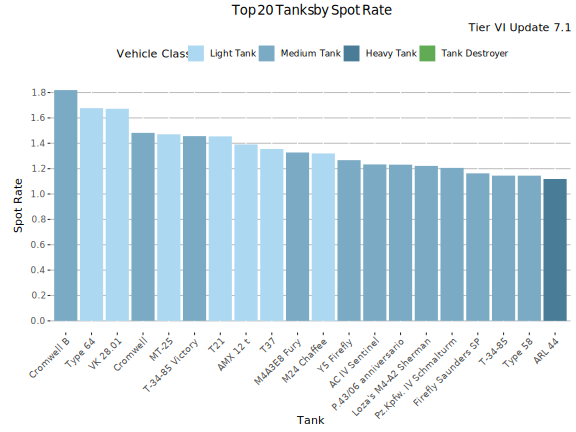
Highest Spot Rate - Table
| Tank | Spot Rate | Average WR | Player WR at Tier | Players | Battles/Player | Vehicle Class | Tank type |
|---|---|---|---|---|---|---|---|
| Cromwell B | 1.82 | 56.9% | 55.7% | 2 657 | 80 | Medium Tank | Premium |
| VK 28.01 | 1.68 | 52.8% | 52.2% | 6 730 | 117 | Light Tank | Researchable |
| Type 64 | 1.67 | 50.2% | 51.4% | 3 838 | 65 | Light Tank | Premium |
| Cromwell | 1.48 | 51.7% | 51.7% | 3 366 | 78 | Medium Tank | Researchable |
| MT-25 | 1.47 | 49.8% | 50.5% | 4 812 | 85 | Light Tank | Researchable |
| T-34-85 Victory | 1.46 | 54.9% | 54.9% | 656 | 102 | Medium Tank | Premium |
| AMX 12 t | 1.39 | 52.1% | 51% | 3 190 | 71 | Light Tank | Researchable |
| T37 | 1.36 | 48.8% | 49.5% | 2 246 | 75 | Light Tank | Researchable |
| M24 Chaffee | 1.32 | 50.3% | 50.4% | 4 058 | 68 | Light Tank | Researchable |
| Y5 Firefly | 1.26 | 50.7% | 50.9% | 2 262 | 75 | Medium Tank | Premium |
| P.43/06 anniversario | 1.23 | 51.4% | 50.7% | 13 164 | 66 | Medium Tank | Premium |
| AC IV Sentinel | 1.23 | 50% | 50.6% | 2 619 | 80 | Medium Tank | Premium |
| Pz.Kpfw. IV Schmalturm | 1.20 | 53.5% | 53.6% | 2 142 | 82 | Medium Tank | Premium |
| Type 58 | 1.15 | 52.4% | 52.1% | 2 788 | 65 | Medium Tank | Researchable |
| T-34-85 | 1.15 | 50.9% | 50.6% | 4 744 | 111 | Medium Tank | Researchable |
| ARL 44 | 1.12 | 53.7% | 52.5% | 10 428 | 94 | Heavy Tank | Researchable |
| Stridsvagn 74A2 | 1.11 | 55.1% | 54.8% | 1 167 | 81 | Medium Tank | Premium |
| VK 30.01 (D) | 1.10 | 49.1% | 49.4% | 3 558 | 74 | Medium Tank | Researchable |
| M4A3E8 Sherman | 1.09 | 49.6% | 49.8% | 2 771 | 84 | Medium Tank | Researchable |
| M6 | 1.08 | 50.7% | 49.9% | 4 424 | 83 | Heavy Tank | Researchable |
Highest Hit Rate
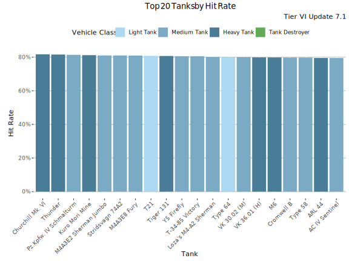
Highest Hit Rate - Table
| Tank | Hit Rate | Average WR | Player WR at Tier | Players | Battles/Player | Vehicle Class | Tank type |
|---|---|---|---|---|---|---|---|
| Churchill Mk. VI | 81.7% | 54.8% | 52.6% | 546 | 69 | Heavy Tank | Premium |
| Thunder | 81.6% | 52.5% | 52.5% | 3 134 | 66 | Heavy Tank | Premium |
| Pz.Kpfw. IV Schmalturm | 81.4% | 53.5% | 53.6% | 2 142 | 82 | Medium Tank | Premium |
| Kuro Mori Mine | 81.2% | 52.6% | 52.3% | 1 560 | 105 | Heavy Tank | Premium |
| Stridsvagn 74A2 | 81% | 55.1% | 54.8% | 1 167 | 81 | Medium Tank | Premium |
| Tiger 131 | 80.7% | 49.4% | 50.5% | 5 892 | 50 | Heavy Tank | Premium |
| T-34-85 Victory | 80.6% | 54.9% | 54.9% | 656 | 102 | Medium Tank | Premium |
| Y5 Firefly | 80.6% | 50.7% | 50.9% | 2 262 | 75 | Medium Tank | Premium |
| Type 64 | 80% | 50.2% | 51.4% | 3 838 | 65 | Light Tank | Premium |
| VK 36.01 (H) | 79.9% | 52.4% | 51.2% | 7 203 | 91 | Heavy Tank | Researchable |
| Cromwell B | 79.8% | 56.9% | 55.7% | 2 657 | 80 | Medium Tank | Premium |
| M6 | 79.8% | 50.7% | 49.9% | 4 424 | 83 | Heavy Tank | Researchable |
| Type 58 | 79.7% | 52.4% | 52.1% | 2 788 | 65 | Medium Tank | Researchable |
| AC IV Sentinel | 79.5% | 50% | 50.6% | 2 619 | 80 | Medium Tank | Premium |
| ARL 44 | 79.5% | 53.7% | 52.5% | 10 428 | 94 | Heavy Tank | Researchable |
| VK 28.01 | 79.3% | 52.8% | 52.2% | 6 730 | 117 | Light Tank | Researchable |
| T-34-85 | 79% | 50.9% | 50.6% | 4 744 | 111 | Medium Tank | Researchable |
| M4A3E8 Sherman | 78.9% | 49.6% | 49.8% | 2 771 | 84 | Medium Tank | Researchable |
| P.43/06 anniversario | 78.7% | 51.4% | 50.7% | 13 164 | 66 | Medium Tank | Premium |
| Churchill VII | 78.7% | 49% | 49.4% | 1 936 | 63 | Heavy Tank | Researchable |
Most Popular Tanks
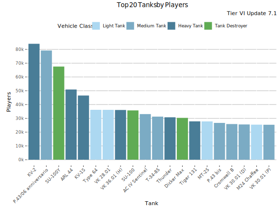
Most played Tanks
This graph shows the most played tanks by number of battles during the update 7.1.
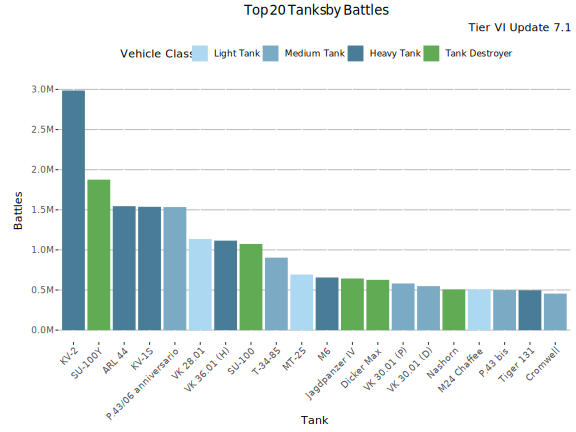
Most Played Tanks - Table
| Tank | Battles | Average WR | Player WR at Tier | Players | Battles/Player | Vehicle Class | Tank type |
|---|---|---|---|---|---|---|---|
| KV-2 | 3.00M | 50.8% | 52.1% | 84 055 | 36 | Heavy Tank | Researchable |
| SU-100Y | 1.90M | 54.3% | 52.8% | 67 545 | 28 | Tank Destroyer | Premium |
| ARL 44 | 1.50M | 54.4% | 52.9% | 50 911 | 30 | Heavy Tank | Researchable |
| KV-1S | 1.50M | 51% | 51% | 46 544 | 33 | Heavy Tank | Researchable |
| P.43/06 anniversario | 1.50M | 53.1% | 51.6% | 79 193 | 19 | Medium Tank | Premium |
| VK 28.01 | 1.10M | 53.5% | 52.4% | 36 161 | 31 | Light Tank | Researchable |
| VK 36.01 (H) | 1.10M | 53.8% | 51.7% | 36 059 | 31 | Heavy Tank | Researchable |
| SU-100 | 1.10M | 51.6% | 51.4% | 35 742 | 30 | Tank Destroyer | Researchable |
| T-34-85 | 0.90M | 52.6% | 51.3% | 31 247 | 29 | Medium Tank | Researchable |
| MT-25 | 0.69M | 50.9% | 51.4% | 27 768 | 25 | Light Tank | Researchable |
| M6 | 0.66M | 51.7% | 50.4% | 23 419 | 28 | Heavy Tank | Researchable |
| Jagdpanzer IV | 0.64M | 51.9% | 51.7% | 24 947 | 26 | Tank Destroyer | Researchable |
| Dicker Max | 0.63M | 54.4% | 52.8% | 30 345 | 21 | Tank Destroyer | Premium |
| VK 30.01 (P) | 0.58M | 50.3% | 50.8% | 25 353 | 23 | Medium Tank | Researchable |
| VK 30.01 (D) | 0.55M | 50.7% | 50.4% | 25 569 | 21 | Medium Tank | Researchable |
| Nashorn | 0.51M | 49.9% | 50.7% | 21 024 | 24 | Tank Destroyer | Researchable |
| M24 Chaffee | 0.51M | 52.2% | 51.5% | 25 425 | 20 | Light Tank | Researchable |
| P.43 bis | 0.50M | 50.7% | 50.8% | 26 685 | 19 | Medium Tank | Researchable |
| Tiger 131 | 0.50M | 52.5% | 52.1% | 27 817 | 18 | Heavy Tank | Premium |
| Cromwell | 0.46M | 52.9% | 52.3% | 21 331 | 21 | Medium Tank | Researchable |
Lowest Performing Tanks
Lowest Relative WR
The graph shows the tanks with the lowest Relative WR. That is the average of players' WR in a tank compared to their average WR at the tier (in all same tier tanks). Relative WR is a measure of the performance/strength of the tank.
- All the statistics are about battles fought during the update 7.1 only.
- The impact of “Stock-grind battles” is reduced based on tier-specific requirement for total battles at the end of the update. Only players with more than 0-152 (depending on the tier) battles in a tank in the end of the update are included to eliminate the impact of the first battles in the tank (with sub-100% crew / modules).
- The players need to have 10-20 battles in a tank and 20-40 battles at the tier during the update.
- Average WR is the players' average WR in the tank
- Player WR at Tier is the average WR of the players of the tank at the tier. Since different tiers have different difficulty, it is more meaningful to compare players' performance in the same tier tanks.
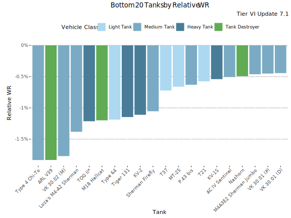
Lowest Relative WR - Table
| Tank | Relative WR | Average WR | Player WR at Tier | Players | Battles/Player | Vehicle Class | Tank type |
|---|---|---|---|---|---|---|---|
| ARL V39 | -1.84% | 48.4% | 50.3% | 1 319 | 58 | Tank Destroyer | Researchable |
| Type 4 Chi-To | -1.83% | 48.6% | 50.4% | 2 099 | 59 | Medium Tank | Researchable |
| TOG II* | -1.22% | 48.2% | 49.4% | 595 | 61 | Heavy Tank | Premium |
| Type 64 | -1.21% | 50.2% | 51.4% | 3 634 | 67 | Light Tank | Premium |
| M18 Hellcat | -1.19% | 49.6% | 50.8% | 3 219 | 76 | Tank Destroyer | Researchable |
| Tiger 131 | -1.15% | 49.4% | 50.5% | 5 185 | 52 | Heavy Tank | Premium |
| KV-2 | -1.09% | 50.3% | 51.4% | 15 518 | 125 | Heavy Tank | Researchable |
| Sherman Firefly | -1% | 49.6% | 50.6% | 2 472 | 62 | Medium Tank | Researchable |
| T37 | -0.74% | 48.8% | 49.5% | 2 144 | 76 | Light Tank | Researchable |
| MT-25 | -0.66% | 49.8% | 50.5% | 4 570 | 88 | Light Tank | Researchable |
| P.43 bis | -0.62% | 49.7% | 50.3% | 3 108 | 63 | Medium Tank | Researchable |
| KV-1S | -0.51% | 49.7% | 50.2% | 7 884 | 116 | Heavy Tank | Researchable |
| AC IV Sentinel | -0.5% | 50.1% | 50.6% | 2 434 | 82 | Medium Tank | Premium |
| Nashorn | -0.5% | 49.5% | 50% | 3 587 | 73 | Tank Destroyer | Researchable |
| VK 30.01 (P) | -0.48% | 49.4% | 49.9% | 3 645 | 77 | Medium Tank | Researchable |
| Churchill VII | -0.45% | 49.1% | 49.5% | 1 790 | 64 | Heavy Tank | Researchable |
| VK 30.01 (D) | -0.45% | 49.1% | 49.6% | 3 310 | 74 | Medium Tank | Researchable |
| Jagdpanzer IV | -0.33% | 50.3% | 50.6% | 4 226 | 93 | Tank Destroyer | Researchable |
| M4A3E8 Sherman | -0.26% | 49.6% | 49.9% | 2 547 | 84 | Medium Tank | Researchable |
| M36 Jackson | -0.26% | 50.5% | 50.8% | 2 074 | 71 | Tank Destroyer | Researchable |
Lowest Average WR
This graph shows the tanks with the lowest average WR at tier VI during update 7.1. Player WR denotes the tank’s players' average WR across all the tanks during the update. Only tanks with more than 400 players are listed. This may filter out few upcoming tanks that are being tested.
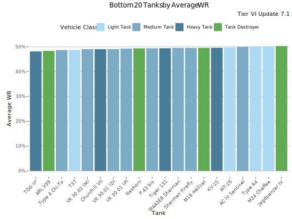
Lowest Average WR - Table
Average WR denotes average WR in a tank across all the players during the update. Player WR denotes the tank’s players' average WR across all the tanks during the update.
| Tank | Average WR | Player WR at Tier | Players | Battles/Player | Vehicle Class | Tank type |
|---|---|---|---|---|---|---|
| TOG II* | 48.2% | 49.4% | 627 | 60 | Heavy Tank | Premium |
| ARL V39 | 48.4% | 50.2% | 1 420 | 56 | Tank Destroyer | Researchable |
| Type 4 Chi-To | 48.7% | 50.4% | 2 296 | 58 | Medium Tank | Researchable |
| T37 | 48.8% | 49.5% | 2 246 | 75 | Light Tank | Researchable |
| Churchill VII | 49% | 49.4% | 1 936 | 63 | Heavy Tank | Researchable |
| VK 30.01 (D) | 49.1% | 49.4% | 3 558 | 74 | Medium Tank | Researchable |
| VK 30.01 (P) | 49.3% | 49.8% | 3 932 | 77 | Medium Tank | Researchable |
| Tiger 131 | 49.4% | 50.5% | 5 892 | 50 | Heavy Tank | Premium |
| Nashorn | 49.5% | 50% | 3 836 | 72 | Tank Destroyer | Researchable |
| P.43 bis | 49.5% | 50.1% | 3 425 | 64 | Medium Tank | Researchable |
| M4A3E8 Sherman | 49.6% | 49.8% | 2 771 | 84 | Medium Tank | Researchable |
| M18 Hellcat | 49.6% | 50.8% | 3 425 | 75 | Tank Destroyer | Researchable |
| Sherman Firefly | 49.6% | 50.6% | 2 669 | 62 | Medium Tank | Researchable |
| KV-1S | 49.7% | 50.1% | 8 494 | 112 | Heavy Tank | Researchable |
| MT-25 | 49.8% | 50.5% | 4 812 | 85 | Light Tank | Researchable |
| AC IV Sentinel | 50% | 50.6% | 2 619 | 80 | Medium Tank | Premium |
| Type 64 | 50.2% | 51.4% | 3 838 | 65 | Light Tank | Premium |
| M24 Chaffee | 50.3% | 50.4% | 4 058 | 68 | Light Tank | Researchable |
| Jagdpanzer IV | 50.3% | 50.6% | 4 499 | 91 | Tank Destroyer | Researchable |
| KV-2 | 50.4% | 51.4% | 17 336 | 116 | Heavy Tank | Researchable |
Lowest Average Damage
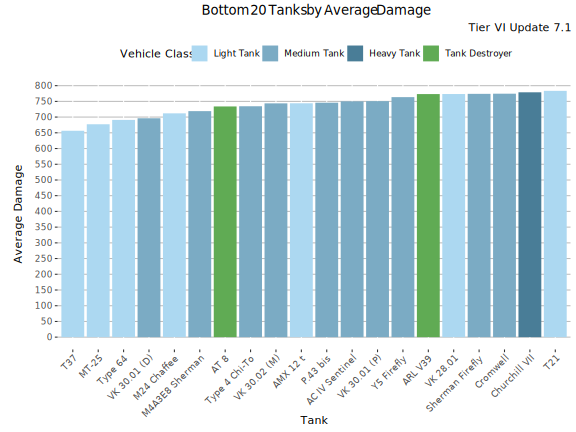
Lowest Average Damage - Table
| Tank | Average Damage | Average WR | Player WR at Tier | Players | Battles/Player | Vehicle Class | Tank type |
|---|---|---|---|---|---|---|---|
| T37 | 657 | 48.8% | 49.5% | 2 246 | 75 | Light Tank | Researchable |
| MT-25 | 680 | 49.8% | 50.5% | 4 812 | 85 | Light Tank | Researchable |
| Type 64 | 690 | 50.2% | 51.4% | 3 838 | 65 | Light Tank | Premium |
| VK 30.01 (D) | 698 | 49.1% | 49.4% | 3 558 | 74 | Medium Tank | Researchable |
| M24 Chaffee | 713 | 50.3% | 50.4% | 4 058 | 68 | Light Tank | Researchable |
| M4A3E8 Sherman | 718 | 49.6% | 49.8% | 2 771 | 84 | Medium Tank | Researchable |
| Type 4 Chi-To | 736 | 48.7% | 50.4% | 2 296 | 58 | Medium Tank | Researchable |
| AT 8 | 736 | 51.3% | 50.3% | 2 051 | 61 | Tank Destroyer | Researchable |
| AMX 12 t | 746 | 52.1% | 51% | 3 190 | 71 | Light Tank | Researchable |
| P.43 bis | 750 | 49.5% | 50.1% | 3 425 | 64 | Medium Tank | Researchable |
| AC IV Sentinel | 751 | 50% | 50.6% | 2 619 | 80 | Medium Tank | Premium |
| VK 30.01 (P) | 753 | 49.3% | 49.8% | 3 932 | 77 | Medium Tank | Researchable |
| Y5 Firefly | 764 | 50.7% | 50.9% | 2 262 | 75 | Medium Tank | Premium |
| Cromwell | 774 | 51.7% | 51.7% | 3 366 | 78 | Medium Tank | Researchable |
| VK 28.01 | 775 | 52.8% | 52.2% | 6 730 | 117 | Light Tank | Researchable |
| Sherman Firefly | 776 | 49.6% | 50.6% | 2 669 | 62 | Medium Tank | Researchable |
| ARL V39 | 777 | 48.4% | 50.2% | 1 420 | 56 | Tank Destroyer | Researchable |
| Churchill VII | 781 | 49% | 49.4% | 1 936 | 63 | Heavy Tank | Researchable |
| T-34-85 | 789 | 50.9% | 50.6% | 4 744 | 111 | Medium Tank | Researchable |
| M18 Hellcat | 803 | 49.6% | 50.8% | 3 425 | 75 | Tank Destroyer | Researchable |
Lowest Average Kills/Battle
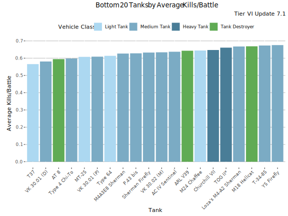
Lowest Average Kills/Battle - Table
| Tank | Average Kills/Battle | Average WR | Player WR at Tier | Players | Battles/Player | Vehicle Class | Tank type |
|---|---|---|---|---|---|---|---|
| T37 | 0.57 | 48.8% | 49.5% | 2 246 | 75 | Light Tank | Researchable |
| VK 30.01 (D) | 0.58 | 49.1% | 49.4% | 3 558 | 74 | Medium Tank | Researchable |
| AT 8 | 0.60 | 51.3% | 50.3% | 2 051 | 61 | Tank Destroyer | Researchable |
| Type 4 Chi-To | 0.60 | 48.7% | 50.4% | 2 296 | 58 | Medium Tank | Researchable |
| MT-25 | 0.61 | 49.8% | 50.5% | 4 812 | 85 | Light Tank | Researchable |
| VK 30.01 (P) | 0.61 | 49.3% | 49.8% | 3 932 | 77 | Medium Tank | Researchable |
| Type 64 | 0.61 | 50.2% | 51.4% | 3 838 | 65 | Light Tank | Premium |
| M4A3E8 Sherman | 0.63 | 49.6% | 49.8% | 2 771 | 84 | Medium Tank | Researchable |
| P.43 bis | 0.63 | 49.5% | 50.1% | 3 425 | 64 | Medium Tank | Researchable |
| Sherman Firefly | 0.63 | 49.6% | 50.6% | 2 669 | 62 | Medium Tank | Researchable |
| AC IV Sentinel | 0.64 | 50% | 50.6% | 2 619 | 80 | Medium Tank | Premium |
| ARL V39 | 0.65 | 48.4% | 50.2% | 1 420 | 56 | Tank Destroyer | Researchable |
| M24 Chaffee | 0.65 | 50.3% | 50.4% | 4 058 | 68 | Light Tank | Researchable |
| Churchill VII | 0.65 | 49% | 49.4% | 1 936 | 63 | Heavy Tank | Researchable |
| TOG II* | 0.66 | 48.2% | 49.4% | 627 | 60 | Heavy Tank | Premium |
| M18 Hellcat | 0.67 | 49.6% | 50.8% | 3 425 | 75 | Tank Destroyer | Researchable |
| Y5 Firefly | 0.68 | 50.7% | 50.9% | 2 262 | 75 | Medium Tank | Premium |
| T-34-85 | 0.68 | 50.9% | 50.6% | 4 744 | 111 | Medium Tank | Researchable |
| Nashorn | 0.68 | 49.5% | 50% | 3 836 | 72 | Tank Destroyer | Researchable |
| AMX 12 t | 0.70 | 52.1% | 51% | 3 190 | 71 | Light Tank | Researchable |
Lowest Spot Rate
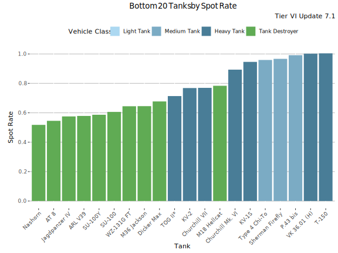
Lowest Spot Rate - Table
| Tank | Spot Rate | Average WR | Player WR at Tier | Players | Battles/Player | Vehicle Class | Tank type |
|---|---|---|---|---|---|---|---|
| Nashorn | 0.52 | 49.5% | 50% | 3 836 | 72 | Tank Destroyer | Researchable |
| AT 8 | 0.55 | 51.3% | 50.3% | 2 051 | 61 | Tank Destroyer | Researchable |
| Jagdpanzer IV | 0.58 | 50.3% | 50.6% | 4 499 | 91 | Tank Destroyer | Researchable |
| ARL V39 | 0.58 | 48.4% | 50.2% | 1 420 | 56 | Tank Destroyer | Researchable |
| SU-100Y | 0.59 | 52.4% | 52.1% | 12 659 | 105 | Tank Destroyer | Premium |
| SU-100 | 0.61 | 51% | 50.7% | 7 270 | 90 | Tank Destroyer | Researchable |
| WZ-131G FT | 0.64 | 51.3% | 51.3% | 1 503 | 67 | Tank Destroyer | Researchable |
| M36 Jackson | 0.65 | 50.5% | 50.7% | 2 174 | 71 | Tank Destroyer | Researchable |
| Dicker Max | 0.68 | 52% | 51.8% | 4 859 | 80 | Tank Destroyer | Premium |
| TOG II* | 0.71 | 48.2% | 49.4% | 627 | 60 | Heavy Tank | Premium |
| KV-2 | 0.77 | 50.4% | 51.4% | 17 336 | 116 | Heavy Tank | Researchable |
| Churchill VII | 0.77 | 49% | 49.4% | 1 936 | 63 | Heavy Tank | Researchable |
| M18 Hellcat | 0.78 | 49.6% | 50.8% | 3 425 | 75 | Tank Destroyer | Researchable |
| Churchill Mk. VI | 0.89 | 54.8% | 52.6% | 546 | 69 | Heavy Tank | Premium |
| KV-1S | 0.95 | 49.7% | 50.1% | 8 494 | 112 | Heavy Tank | Researchable |
| Type 4 Chi-To | 0.96 | 48.7% | 50.4% | 2 296 | 58 | Medium Tank | Researchable |
| Sherman Firefly | 0.97 | 49.6% | 50.6% | 2 669 | 62 | Medium Tank | Researchable |
| P.43 bis | 0.99 | 49.5% | 50.1% | 3 425 | 64 | Medium Tank | Researchable |
| T-150 | 1.00 | 54.6% | 52.9% | 502 | 92 | Heavy Tank | Premium |
| VK 36.01 (H) | 1.00 | 52.4% | 51.2% | 7 203 | 91 | Heavy Tank | Researchable |
Lowest Hit Rate
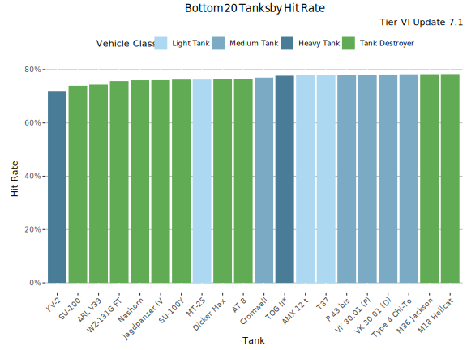
Lowest Hit Rate - Table
| Tank | Hit Rate | Average WR | Player WR at Tier | Players | Battles/Player | Vehicle Class | Tank type |
|---|---|---|---|---|---|---|---|
| KV-2 | 72% | 50.4% | 51.4% | 17 336 | 116 | Heavy Tank | Researchable |
| SU-100 | 74% | 51% | 50.7% | 7 270 | 90 | Tank Destroyer | Researchable |
| ARL V39 | 74.4% | 48.4% | 50.2% | 1 420 | 56 | Tank Destroyer | Researchable |
| WZ-131G FT | 75.6% | 51.3% | 51.3% | 1 503 | 67 | Tank Destroyer | Researchable |
| Jagdpanzer IV | 76% | 50.3% | 50.6% | 4 499 | 91 | Tank Destroyer | Researchable |
| Nashorn | 76% | 49.5% | 50% | 3 836 | 72 | Tank Destroyer | Researchable |
| SU-100Y | 76.3% | 52.4% | 52.1% | 12 659 | 105 | Tank Destroyer | Premium |
| MT-25 | 76.3% | 49.8% | 50.5% | 4 812 | 85 | Light Tank | Researchable |
| Dicker Max | 76.4% | 52% | 51.8% | 4 859 | 80 | Tank Destroyer | Premium |
| AT 8 | 76.4% | 51.3% | 50.3% | 2 051 | 61 | Tank Destroyer | Researchable |
| Cromwell | 77.1% | 51.7% | 51.7% | 3 366 | 78 | Medium Tank | Researchable |
| TOG II* | 77.7% | 48.2% | 49.4% | 627 | 60 | Heavy Tank | Premium |
| AMX 12 t | 77.9% | 52.1% | 51% | 3 190 | 71 | Light Tank | Researchable |
| P.43 bis | 77.9% | 49.5% | 50.1% | 3 425 | 64 | Medium Tank | Researchable |
| T37 | 77.9% | 48.8% | 49.5% | 2 246 | 75 | Light Tank | Researchable |
| VK 30.01 (P) | 78% | 49.3% | 49.8% | 3 932 | 77 | Medium Tank | Researchable |
| VK 30.01 (D) | 78.1% | 49.1% | 49.4% | 3 558 | 74 | Medium Tank | Researchable |
| Type 4 Chi-To | 78.2% | 48.7% | 50.4% | 2 296 | 58 | Medium Tank | Researchable |
| M36 Jackson | 78.3% | 50.5% | 50.7% | 2 174 | 71 | Tank Destroyer | Researchable |
| M18 Hellcat | 78.3% | 49.6% | 50.8% | 3 425 | 75 | Tank Destroyer | Researchable |
Least popular Tanks
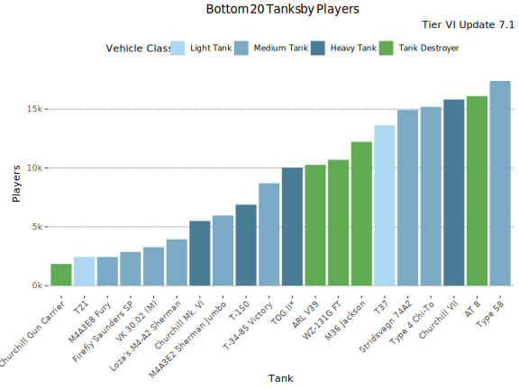
Least played Tanks
This graph shows the most played tanks by number of battles during the update 7.1.
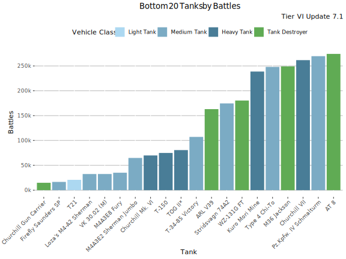
Least Played Tanks - Table
| Tank | Battles | Average WR | Player WR at Tier | Players | Battles/Player | Vehicle Class | Tank type |
|---|---|---|---|---|---|---|---|
| Churchill Gun Carrier | 14 868 | 59.7% | 55.4% | 1 835 | 8 | Tank Destroyer | Premium |
| Firefly Saunders SP | 16 599 | 57.3% | 53.4% | 2 866 | 6 | Medium Tank | Premium |
| T21 | 20 790 | 60.2% | 54.2% | 2 435 | 9 | Light Tank | Premium |
| Loza’s M4-A2 Sherman | 32 478 | 54.9% | 53.4% | 3 937 | 8 | Medium Tank | Premium |
| VK 30.02 (M) | 32 498 | 59.4% | 53.4% | 3 269 | 10 | Medium Tank | Premium |
| M4A3E8 Fury | 35 099 | 56.6% | 54.6% | 2 437 | 14 | Medium Tank | Premium |
| M4A3E2 Sherman Jumbo | 64 832 | 59.8% | 54.8% | 5 959 | 11 | Medium Tank | Premium |
| Churchill Mk. VI | 69 839 | 56.6% | 53.3% | 5 495 | 13 | Heavy Tank | Premium |
| T-150 | 74 871 | 60.2% | 53.9% | 6 881 | 11 | Heavy Tank | Premium |
| TOG II* | 80 630 | 52.4% | 52.5% | 10 027 | 8 | Heavy Tank | Premium |
| T-34-85 Victory | 107 170 | 60.1% | 55.3% | 8 701 | 12 | Medium Tank | Premium |
| ARL V39 | 163 054 | 49.8% | 50.9% | 10 261 | 16 | Tank Destroyer | Researchable |
| Stridsvagn 74A2 | 174 584 | 57% | 55.9% | 14 927 | 12 | Medium Tank | Premium |
| WZ-131G FT | 180 376 | 52.5% | 52% | 10 693 | 17 | Tank Destroyer | Researchable |
| Kuro Mori Mine | 238 694 | 56.1% | 53.4% | 19 322 | 12 | Heavy Tank | Premium |
| Type 4 Chi-To | 248 054 | 49.9% | 51% | 15 193 | 16 | Medium Tank | Researchable |
| M36 Jackson | 249 146 | 52.2% | 51.5% | 12 220 | 20 | Tank Destroyer | Researchable |
| Churchill VII | 261 653 | 50.2% | 50.5% | 15 823 | 17 | Heavy Tank | Researchable |
| Pz.Kpfw. IV Schmalturm | 269 632 | 56.6% | 54.3% | 21 848 | 12 | Medium Tank | Premium |
| AT 8 | 274 212 | 51.4% | 50.6% | 16 111 | 17 | Tank Destroyer | Researchable |
-

This work is licensed under a Creative Commons Attribution-ShareAlike 4.0 International License.
-

-

Blitzanalysiz() is a player-created website for World of Tanks: Blitz and developed in accordance with WG DPP. This site is not an official Wargaming or World of Tanks: Blitz website. World of Tanks Blitz and Wargaming are trademarks of Wargaming.net Limited. Game content and materials copyright © Wargaming.net. All rights reserved.